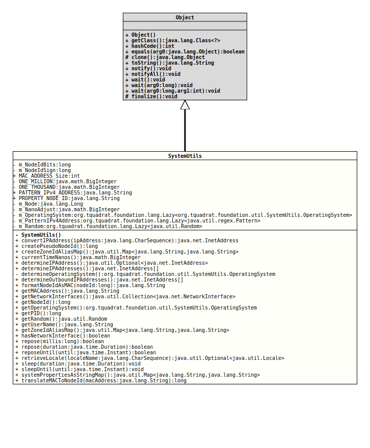

- Author:
- Thomas Thrien (thomas.thrien@tquadrat.org)
- Version:
- $Id: SystemUtils.java 1037 2022-12-15 00:35:17Z tquadrat $
- Since:
- 0.0.5
- UML Diagram
-

UML Diagram for "org.tquadrat.foundation.util.SystemUtils"
{kind=link}
-
Nested Class Summary
Nested ClassesModifier and TypeClassDescriptionstatic enumThe operating system families that are supported (or not) by Java.
Currently, we can distinguish only between Microsoft Windows, UNIX/Linux and MacOX/OS-X. -
Field Summary
FieldsModifier and TypeFieldDescriptionprivate static final BigIntegerThe adjustment for the values that are returned fromSystem.nanoTime().private static LongThe location or node id.private static final longThe valid bits for a node id: 281474976710655L.private static final longThe sign bit for a node id: 1099511627776L.private static final Lazy<SystemUtils.OperatingSystem>The operating system.The pattern to check a string for an IPv4 address.The random number generator.The alias map.static final intThe length of a String containing a MAC address: 17.private static final BigIntegerFactor for the conversion of milliseconds to nanoseconds.private static final BigIntegerFactor for the conversion of seconds to milliseconds.static final StringThe regular expression for a valid IPv4 address: "^((25[0-5]|2[0-4][0-9]|[01]?[0-9][0-9]?)\\.){3}(25[0-5]|2[0-4][0-9]|[01]?[0-9][0-9]?)$".static final StringThe name of the system property for the node id: "org.tquadrat.foundation.util.SystemUtils.NodeId". -
Constructor Summary
Constructors -
Method Summary
Modifier and TypeMethodDescriptionstatic final InetAddressconvertIPAddress(CharSequence ipAddress) Converts an IP address that is given as a string into anInetAddressobject.static final longReturns a pseudo node id; this is useful in cases a machine does not have a network card (NIC) so that a MAC address could not be obtained, or if the real node id should not be used.Creates the alias map for the old (deprecated) zone ids that are used for the call toZoneId.of(String, java.util.Map)to retrieve aZoneIdinstance for the given zone id.static final BigIntegerReturns the current time as nanoseconds since the beginning of the Gregorian calendar (1582-10-15T00:00).static final Optional<InetAddress>Determines an IP address of the machine this program is running on.static final InetAddress[]Determines all the IP addresses of the machine this program is running on.private static final SystemUtils.OperatingSystemDetermines the operating system.static final InetAddress[]Determines those IP addresses of the machine this program is running on that are used to communicate with the outside world.static InetAddress[]Deprecated, for removal: This API element is subject to removal in a future version.static final StringformatNodeIdAsMAC(long nodeId) Formats the given node id as a MAC address string.static final StringReturns the MAC address for the current computer.static final Collection<NetworkInterface>Returns aCollectionof all the network interfaces on this machine.static final longReturns the unique id of this node.static final SystemUtils.OperatingSystemReturns the current operating system.static final longgetPID()Returns the PID, the process id, for the VM this (the current) program runs in.static longDeprecated, for removal: This API element is subject to removal in a future version.UsecreatePseudoNodeId()instead.static final RandomReturns the system random number generator.Returns the alias map; if not yet created, the alias map will be created by a call tocreateZoneIdAliasMap()and the result to that call will be cached for future calls.static final booleanChecks whether the current system has a network interface installed.static final StringreplaceSystemVariable(CharSequence text, Map<String, ? extends Object>... additionalSources) Deprecated, for removal: This API element is subject to removal in a future version.static final booleanrepose(long millis) An implementation ofThread.sleep(long)that does not throw an exception in case it will be interrupted.static final booleanAn implementation ofrepose(long)that takes an instance ofDurationto determine the time to sleep.static final booleanreposeUntil(Instant until) An implementation ofsleepUntil(Instant)that does not throw an exception when interrupted.retrieveLocale(CharSequence localeName) Retrieves an instance ofLocalefor the given locale name.static final voidAn implementation ofThread.sleep(long)that takes an instance ofDurationto determine the time to sleep.static final voidsleepUntil(Instant until) Causes the currently executing thread to sleep (temporarily cease execution) until the specified time, subject to the precision and accuracy of system timers and schedulers.Returns the system propertiesstatic final longtranslateMACToNodeId(String macAddress) Translates a given MAC address into a numerical node id.
-
Field Details
-
m_NodeIdBits
The valid bits for a node id: 281474976710655L.- See Also:
-
m_NodeIdSign
The sign bit for a node id: 1099511627776L.- See Also:
-
MAC_ADDRESS_Size
The length of a String containing a MAC address: 17.- See Also:
-
ONE_MILLION
Factor for the conversion of milliseconds to nanoseconds. -
ONE_THOUSAND
Factor for the conversion of seconds to milliseconds. -
PATTERN_IPv4_ADDRESS
The regular expression for a valid IPv4 address: "^((25[0-5]|2[0-4][0-9]|[01]?[0-9][0-9]?)\\.){3}(25[0-5]|2[0-4][0-9]|[01]?[0-9][0-9]?)$".- See Also:
-
PROPERTY_NODE_ID
The name of the system property for the node id: "org.tquadrat.foundation.util.SystemUtils.NodeId".
The value has to be a positive number. It will be parsed by
Long.decode(String); this means, it could be a decimal, a hex or an octal number – so be careful with leading zeroes!This system property is not necessarily configured; if missing, the node id will be determined by the hardware address of the NIC.
- See Also:
-
m_Node
The location or node id. -
m_NanoAdjust
The adjustment for the values that are returned fromSystem.nanoTime(). -
m_OperatingSystem
The operating system. -
m_PatternIPv4Address
The pattern to check a string for an IPv4 address. -
m_Random
The random number generator. -
m_ZoneIdAliasMap
The alias map.- See Also:
-
-
Constructor Details
-
SystemUtils
private SystemUtils()No instance allowed for this class.
-
-
Method Details
-
convertIPAddress
@API(status=EXPERIMENTAL, since="0.0.5") public static final InetAddress convertIPAddress(CharSequence ipAddress) Converts an IP address that is given as a string into an
TODO Currently this method do not process IPv6 addresses properly.InetAddressobject.- Parameters:
ipAddress- The string with the IP address.- Returns:
- The
InetAddressobject. - Throws:
IllegalArgumentException- The given parameter is not a valid IP address.
-
createPseudoNodeId
Returns a pseudo node id; this is useful in cases a machine does not have a network card (NIC) so that a MAC address could not be obtained, or if the real node id should not be used.
Each call to this method will return a new value.
- Returns:
- The node id.
-
createZoneIdAliasMap
Creates the alias map for the old (deprecated) zone ids that are used for the call toZoneId.of(String, java.util.Map)to retrieve aZoneIdinstance for the given zone id.- Returns:
- The alias map.
- Since:
- 0.0.6
-
currentTimeNanos
Returns the current time as nanoseconds since the beginning of the Gregorian calendar (1582-10-15T00:00).- Returns:
- The current time in nanoseconds.
-
determineIPAddress
@API(status=STABLE, since="0.0.5") public static final Optional<InetAddress> determineIPAddress() throws SocketExceptionDetermines an IP address of the machine this program is running on. Usually this will be one of the addresses that is visible to the outside. In addition, the method has a clear precedence for IPv4 addresses over IPv6 ones.- Returns:
- An instance of
Optionalthat holds the IP address; it will be empty if really no network adapter is active on this machine. - Throws:
SocketException- Problems to retrieve the internet address.
-
determineIPAddresses
Determines all the IP addresses of the machine this program is running on.- Returns:
- The IP addresses.
-
determineOperatingSystem
Determines the operating system.- Returns:
- The operating system.
-
determineOutboundIPAddresses
Determines those IP addresses of the machine this program is running on that are used to communicate with the outside world. This means that only those active network interfaces are considered that are not aloopbackinterface.- Returns:
- The IP addresses.
-
determineOutsideIPAddresses
@API(status=DEPRECATED) @Deprecated(forRemoval=true) public static InetAddress[] determineOutsideIPAddresses()Deprecated, for removal: This API element is subject to removal in a future version.UsedetermineOutboundIPAddresses()instead.Determines those IP addresses of the machine this program is running on that are used to communicate with the outside world. This means that only those active network interfaces are considered that are not aloopbackinterface.- Returns:
- The IP addresses.
-
formatNodeIdAsMAC
Formats the given node id as a MAC address string.- Parameters:
nodeId- The node id.- Returns:
- The MAC address string.
-
getMACAddress
Returns the MAC address for the current computer. In case the machine will have more than one network card (NIC), the returned MAC is selected in the same as forgetNodeId().- Returns:
- The MAC address.
-
getNetworkInterfaces
@API(status=STABLE, since="0.0.5") public static final Collection<NetworkInterface> getNetworkInterfaces()Returns aCollectionof all the network interfaces on this machine. Instead of throwing an exception, the method will return an empty collection in case the machine do not have network configured. Otherwise, the collection contains at least one element, possibly representing aloopbackinterface that only supports communication between entities on this machine.- Returns:
- The
NetworkInterfaces found on this machine. - See Also:
-
getNodeId
Returns the unique id of this node.- Returns:
- The node id.
- See Also:
-
getOperatingSystem
@API(status=STABLE, since="0.0.6") public static final SystemUtils.OperatingSystem getOperatingSystem()Returns the current operating system.- Returns:
- The operating system.
-
getPID
@API(status=STABLE, since="0.0.5") public static final long getPID() throws UnsupportedOperationExceptionReturns the PID, the process id, for the VM this (the current) program runs in.- Returns:
- The PID.
- Throws:
UnsupportedOperationException- The implementation ofProcessHandlethat is currently in use does not support the operationProcessHandle.pid().- See Also:
-
getPseudoNodeId
Deprecated, for removal: This API element is subject to removal in a future version.UsecreatePseudoNodeId()instead.Returns a pseudo node id; this is useful in cases a machine does not have a network card (NIC) so that a MAC address could not be obtained, or if the real node id should not be used.- Returns:
- The node id.
-
getRandom
Returns the system random number generator.- Returns:
- The random number generator.
-
getZoneIdAliasMap
Returns the alias map; if not yet created, the alias map will be created by a call tocreateZoneIdAliasMap()and the result to that call will be cached for future calls.- Returns:
- The alias map.
- Since:
- 0.0.6
- See Also:
-
hasNetworkInterface
Checks whether the current system has a network interface installed.- Returns:
trueif the current system has a network interface installed,falseotherwise.
-
replaceSystemVariable
@SafeVarargs @Deprecated(since="0.1.0", forRemoval=true) @API(status=DEPRECATED, since="0.0.5") public static final String replaceSystemVariable(CharSequence text, Map<String, ? extends Object>... additionalSources) Deprecated, for removal: This API element is subject to removal in a future version.Replaces the variables of the form${<name>}in the given String with values from the system properties, the system environment and the given maps. The method will try the maps in the given sequence.
In addition, five more variables are recognised:tq.ip- The first IP address for the machine that executes this Java virtual machine.
tq.mac- The MAC address of the first NIC in this machine.
tq.nodeId- The node id from the first NIC in this machine.
tq.now- The current date and time as returned by
Instant.now(). tq.pid- The process id of this Java virtual machine.
If no replacement value could be found, the variable will not be replaced at all; no exception will be thrown.
If a value from one of the maps contains a variable itself, this will not be replaced.
The variables names are case-sensitive.- Parameters:
text- The text with the variables; can benull.additionalSources- The maps with additional replacement values.- Returns:
- The new text, or
nullif the provided value fortextwas alreadynull. - See Also:
-
repose
An implementation ofThread.sleep(long)that does not throw an exception in case it will be interrupted.- Parameters:
millis- The time to sleep in milliseconds.- Returns:
trueif the sleep was interrupted,falseif it terminated as planned.
-
repose
An implementation ofrepose(long)that takes an instance ofDurationto determine the time to sleep.- Parameters:
duration- The time to sleep.- Returns:
trueif the sleep was interrupted,falseif it terminated as planned.
-
reposeUntil
An implementation ofsleepUntil(Instant)that does not throw an exception when interrupted.- Parameters:
until- The end time for the sleep period.- Returns:
trueif the sleep was interrupted,falseif it terminated as planned.
-
retrieveLocale
@API(status=STABLE, since="0.0.6") public static final Optional<Locale> retrieveLocale(CharSequence localeName) Retrieves an instance ofLocalefor the given locale name. This method will look up the requested locale first in the locales returned byLocale.getAvailableLocales()before it will create a new instance ofLocaleusingLocale.Builder.
The method will returnOptional.empty()when the format of the givenlocaleNameis invalid.
If none of the already existing instances ofLocalematches the given name, the language part, the country part, the variant part and the script part (if provided) are used to create a new instance. If extensions are given, they will be ignored.
If the given locale name is empty or contains only whitespace, the method will returnLocale.ROOT.- Parameters:
localeName- The name of the locale.- Returns:
- An instance of
Optionalthat holds the instance ofLocalefor the given name.
-
sleep
@API(status=STABLE, since="0.0.7") public static final void sleep(Duration duration) throws InterruptedException An implementation ofThread.sleep(long)that takes an instance ofDurationto determine the time to sleep.- Parameters:
duration- The time to sleep.- Throws:
InterruptedException- Another thread has interrupted the current thread (that one executingsleep(). The interrupted status of the current thread is cleared when this exception is thrown.
-
sleepUntil
@API(status=STABLE, since="0.0.7") public static final void sleepUntil(Instant until) throws InterruptedException Causes the currently executing thread to sleep (temporarily cease execution) until the specified time, subject to the precision and accuracy of system timers and schedulers. The thread does not lose ownership of any monitors.- Parameters:
until- The end time for the sleep.- Throws:
InterruptedException- Another thread has interrupted the current thread (that one executingsleep(). The interrupted status of the current thread is cleared when this exception is thrown.- Since:
- 0.0.7
- See Also:
-
systemPropertiesAsStringMap
Returns the system properties as a
Map<String,String>.System.getProperties()returns an instance ofProperties, and that is implementingMap<String,Object>. Although it is unlikely that a value is not a String (if not impossible …), this method allows to enforce it.- Note:
-
- A mere cast to
Map<String,String>does not work …
- A mere cast to
- Returns:
- An unmodifiable map with the system properties as Strings.
-
translateMACToNodeId
Translates a given MAC address into a numerical node id.
A MAC address is a string consisting of 12 hex digits, grouped by two, each group separated by a hyphen:
xx-xx-xx-xx-xx-xx- Parameters:
macAddress- The MAC address to translate.- Returns:
- The node id.
-
determineOutboundIPAddresses()instead.